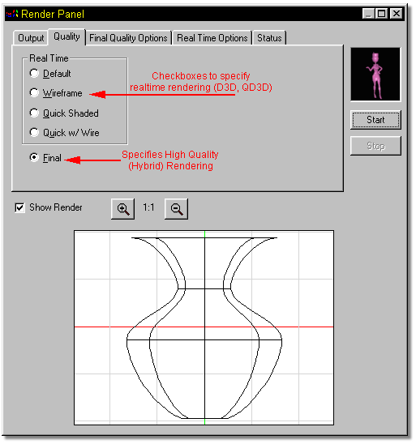

The Output Quality tab on the render dialog allows you to choose between
rendering types (real time, or hybrid) and options for them (wireframe, control
points, etc.)
The Output Quality tab on the render dialog allows you to choose between
rendering types (real time, or hybrid) and options for them (wireframe, control
points, etc.)

Tell Me About:
Render Output
Final Quality Options
Real Time Options
Status